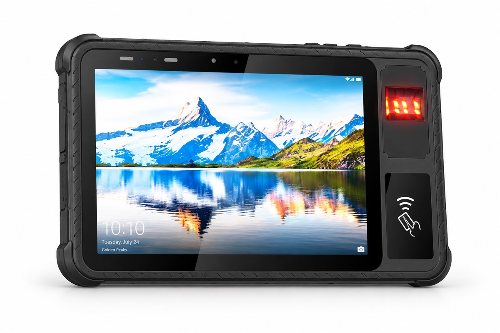
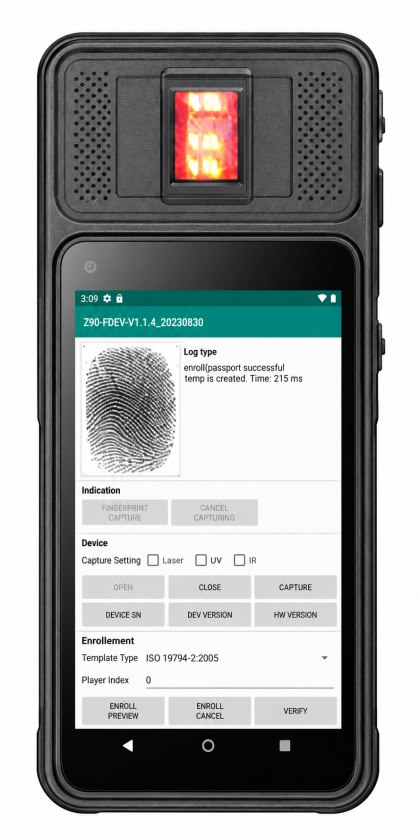

Biometric Tablet or Biometric Handheld Terminal
Quick answer: Choose by the workflow rather than the spec sheet. Handhelds win when the operator walks and scans: a 5-inch handheld PDA is 178 × 83 × 17 mm and about 242 g, small enough to work one-handed all day. Tablets win when the operator stands at a counter or works from a vehicle, when the session captures more than one modality, or when the applicant has to see the screen: an 8-inch rugged tablet is 248 × 170 × 17.8 mm and 890 g with a 10,000 mAh battery. Both run Android, both drive their modules through the SDK supplied with the build, and neither changes the record format your programme has to produce.
The two form factors carry the same capture modules and produce the same records. What differs is what the operator does with their other hand.

The decision is the workflow, before the device
Most identity projects start by asking which device has the better specification, and that question almost never resolves anything. The useful question is where the operator's body is for eight hours: walking a route with the device in one hand, standing behind a counter with the applicant in front of them, or sitting in a vehicle with the device in a cradle.
Once that is settled, the module set follows from the workflow and the record format follows from the programme. Screen size stops being a preference and becomes a consequence.
Where a handheld wins

Door-to-door enrolment, mobile verification teams, field checks and queue-busting at an event all have the same shape: the operator is standing, moving, and holding the device in one hand while the other hand guides the applicant's finger or steadies a document. A 5-inch handheld PDA at 178 × 83 × 17 mm and roughly 242 g fits that job exactly. The XH-100 puts a fingerprint module, NFC and a 2D scan engine into that body, which is why it turns up in SIM registration and mobile enrolment work rather than at counters.
A handheld also brings a physical scan trigger, so barcode and document reads do not depend on finding an on-screen button while wearing gloves. Where the work is mostly scanning with an occasional identity check, the handheld is the honest answer.
Where a tablet wins
Counters, enrolment stations, vehicle mounts and kiosks are the other half. Here the operator is stationary, the session is longer, and the screen has to carry a form as well as a capture preview. An 8-inch rugged tablet at 248 × 170 × 17.8 mm and 890 g with a 10,000 mAh battery is the size that carries a full working day without a mid-shift charge, and the XH-400 adds IP65 sealing, wired RJ45 and the full module set on a 10.1-inch screen.
Three things push a deployment towards a tablet specifically:
- More than one modality per session. Fingerprint plus document chip plus face is comfortable on a large screen and cramped on a small one, and the applicant has a surface to place a hand or a document on.
- Mounting. A vehicle cradle, a counter stand or a kiosk expects a tablet. Our industrial design work covers the bracket and the cradle, and a tablet is what those drawings are made for.
- The applicant has to see. Neither form factor solves this alone. The dual-screen ID verification terminal puts a second display in front of the applicant so they can confirm what was captured, which supervised counters increasingly require.
Side by side
| Handheld | Tablet | |
|---|---|---|
| Typical body | 5-inch handheld PDA, 178 × 83 × 17 mm, approx. 242 g | 8-inch rugged tablet, 248 × 170 × 17.8 mm, 890 g |
| Battery | 4,000 mAh, approx. 8 hours active use, standby over 300 hours | 10,000 mAh, approx. 8 hours active use |
| How it is held | One hand, all day, with a physical scan trigger | Two hands, or mounted in a cradle, stand or vehicle dock |
| Best at | Walking routes, door-to-door enrolment, field checks, scan-heavy work | Counters, enrolment stations, vehicle mounting, multi-modality sessions |
| Identity models | XH-100 — fingerprint, NFC, 2D engine | XH-400 — fingerprint, ID card reader, NFC, 2D engine; XH-500 where identity checks sit inside wider field work |
| Applicant-facing screen | No | No, unless specified; use the dual-screen terminal |
What does not change between the two
It is worth being clear about this, because it is where buyers expect a difference and there isn't one:
- Android and the SDK. Both platforms run Android and the modules are driven through the API and SDK supplied with the build, so the capture calls in your application are the same.
- The record format. The fingerprint profile you specify (FAP10 capacitive or FAP20 and FAP30 optical) produces the same ISO record either way. See the FAP 10, FAP 20 and FAP 30 comparison.
- Offline behaviour. Capture, matching and store-and-forward run on the device in both form factors; the second-generation ID card reader works offline and an online version is available where the workflow depends on a central service.
- Fleet management. Zero-touch enrolment, MDM, certificate renewal, version pinning and remote wipe work the same way across a mixed fleet. Managing a fleet of identity terminals covers the mixed case.
- Quality control and serialisation. Every unit is serialised and traceable to its production record, whichever housing it ships in.
What does change is the screen layout. A form designed for a 10-inch screen has to be reworked for a 5-inch one, and that is a software task worth budgeting rather than discovering late.
Cost
Neither form factor is inherently cheaper. Price follows the platform, the module set, the certification your market requires and the quantity rather than the shape of the housing; the full breakdown is in What Decides the Price of a Biometric Tablet. Settling the form factor before you ask for a quotation is what stops you pricing two different builds and then having to choose between them on price alone.
Frequently asked questions
Can a handheld carry the same fingerprint modules as a tablet?
Fingerprint modules are offered on handheld and tablet platforms, but which profiles a given model supports is a specification question, not a form factor question. Confirm the profile your record format needs at the specification stage and the build is quoted against that module.
Can a tablet replace a handheld for door-to-door enrolment?
It can, and teams sometimes prefer the larger screen for the data entry, but the operator carries roughly four times the weight for a full day and loses the one-hand grip. Handhelds win when the operator walks; tablets win when the operator stands at a counter or works from a vehicle.
Do both run the same application?
Both are Android platforms and the modules are driven through the API and SDK supplied with the build, so the capture calls are the same. What changes is the screen layout: a form designed for a 10-inch screen has to be reworked for a 5-inch one, which is a software task rather than a hardware one.
Which one lasts a full shift on battery?
Both are specified for roughly eight hours of active use, but they reach it differently: a 4,000 mAh handheld battery drives a small screen, while a 10,000 mAh tablet battery drives a large one. Where shifts run long or charging is unreliable, the larger battery and a vehicle or desk cradle are the safer combination.
Does the applicant need to see the screen?
If they do, neither a single-screen tablet nor a handheld is the right answer on its own. The dual-screen ID verification terminal puts a second display in front of the applicant so they can confirm what the operator captured, which is what supervised counters require.
Which form factor costs less?
Neither, in the abstract. Price follows the platform, the module set, the certification scope and the quantity rather than the shape of the housing. Settling the form factor before asking for a quotation is what keeps you from pricing two different builds.
Tell Us Your Workflow
Describe where the operator stands and what gets captured, and we will say which platform fits and which modules it needs.